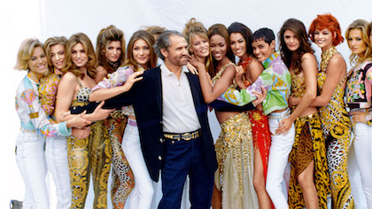
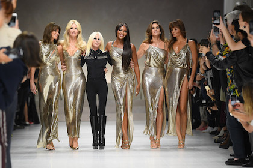

20th Anniversary of
Gianni Versace Death
Donetella 2017
Versace 20th anniversary Show:
This is for you, Gianni
On Friday, some of our favorite '90s-era supermodels came together to commemorate the legacy, and death, of the late Gianni Versace. A reunion for the ages, the iconic catwalk queens shut down the brand's 20th anniversary show like only Gianni's Girls.
Today's event solidified Versace as a leading force in fashion, then and now. In terms of the clothes themselves, showgoers and Versace diehards were reminded of how strong a hand the label had in shaping the fashion of the
90s. All of the signature prints were in tow: old Vogue covers printed over silky slip dresses, denim jackets adorned with larger-than-life jewels, vintage tees, and near-exact replicas of the Warhol-inspired gown worn first by Campbell at the historic spring 1991 show (now on Vittoria Ceretti).
Today, Versace is currently valued at $5.8 billion. The success of the brand over the past three decades has caused the net worth of the company.


July . 15 . 17
Gianni 1991